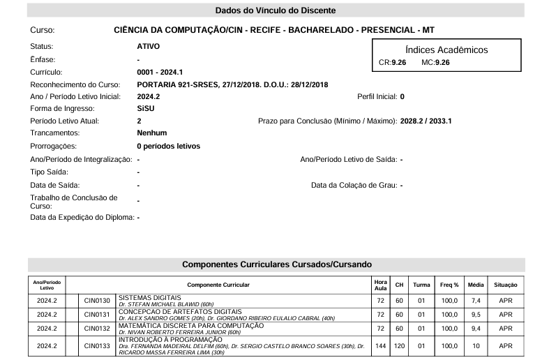

Faculdade
Informações do meu historico Acadêmico abaixo
Data de Ingresso:
2024.2
Por que escolhi a área?
Desde cedo sempre tive muito interesse por tecnologia e inovação. Escolhi Ciência da Computação para poder criar soluções práticas e impactar positivamente o mundo.

Histórico Academico
